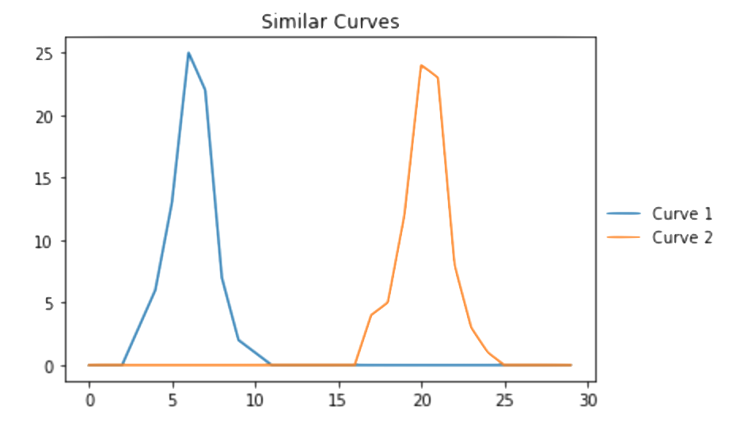

Definition
Dynamic Time Warping (DTW) is an algorithm for measuring similarity between two temporal sequences which may vary in speed. For instance, this could be a sequential list of numbers, a sequence of footsteps, a sequence of points creating a curve, etc. DTW can be used to find the optimal match between two sequences, which depend on some sequential restriction. Essentially, we can use DTW to determine if two sequences match or not irrespective of their difference in time series.
Application
Suppose we have two similar curves: $C_1$ and $C_2$. Both curves have a height of roughly 25 and a curve length of 8. Let's construct two curves with these properties and visualize them below:
import matplotlib.pyplot as plt #Create two similar curves C_1 = [0,0,0,3,6,13,25,22,7,2,1,0,0,0,0,0,0,0,0,0,0,0,0,0,0,0,0,0,0,0] C_2 = [0,0,0,0,0,0,0,0,0,0,0,0,0,0,0,0,0,4,5,12,24,23,8,3,1,0,0,0,0,0] #Plot similar curves plt.plot(C_1,label="Curve 1") plt.plot(C_2,label="Curve 2") plt.title("Similar Curves") plt.legend(bbox_to_anchor=(1.25, .55)) plt.show() >>> 
Above, we see that the curves look nearly identical, but are shifted in time. We can apply a gaussian filter to both curves to see a slighly smoother version of the curves as follows:
from scipy.ndimage.filters import gaussian_filter #Creating the smooth curves from the gaussian filter smoothed_C1 = gaussian_filter(C_1,2) smoothed_C2 = gaussian_filter(C_2,2) #Plotting the smoothed curves plt.plot(smoothed_C1,label="Smoothed Curve 1") plt.plot(smoothed_C2,label="Smoothed Curve 2") plt.title("Smoothed Similar Curves") plt.legend(bbox_to_anchor=(1.45, .55)) plt.show() >>>
Above, we see that the curves are almost identical. Now, a commonly used distance metric to compare verctors with numerical data is the euclidean distance which is defined below:
$$d(p,q) = \sqrt{\sum_{i=1}^n\left(q_i-p_i\right)}$$where $p,q$ are our two vectors, each with $n$ elements. Let us compute the euclidean distance between $C_1$ and $C_2$ and the euclidean distance between the gaussian smoothed curves as follows:
from scipy.spatial import distance #Euclidean distance of original curves dst = distance.euclidean(C_1,C_2) #Euclidean distance of smoothed curves smoothed_dst = distance.euclidean(smoothed_C1,smoothed_C2) print(dst) print(smoothed_dst) >>> 52.3545604508 36.4554522671
We see that there is a big distance between the two curves using Euclidean distance. However, in actuality the curves are very similar, there is just a space of time separating the two curves. Let us create a function below to calcualte the dynamic time warp between two vectors and then observe the distance calculation it provides us for $C_1$, $C_2$ along with the smoothed versions of the two curves.
import math def dynamicTimeWarp(seqA, seqB, d = lambda x,y: abs(x-y)): numRows, numCols = len(seqA), len(seqB) cost = [[0 for _ in range(numCols)] for _ in range(numRows)] cost[0][0] = d(seqA[0], seqB[0]) for i in range(1, numRows): cost[i][0] = cost[i-1][0] + d(seqA[i], seqB[0]) for j in range(1, numCols): cost[0][j] = cost[0][j-1] + d(seqA[0], seqB[j]) for i in range(1, numRows): for j in range(1, numCols): choices = cost[i-1][j], cost[i][j-1], cost[i-1][j-1] cost[i][j] = min(choices) + d(seqA[i], seqB[j]) return cost[-1][-1] DTW = dynamicTimeWarp(C_1,C_2) smoothed_DTW = dynamicTimeWarp(smoothed_C1,smoothed_C2) print(DTW) print(smoothed_DTW) >>> 7 1
We now see that the distance between our curves is much closer than that of the euclidean distance. Dynamic Time Warping is great for observing the similarities with respect to time series based data
Code:
All code found in this tutorial can be found here.